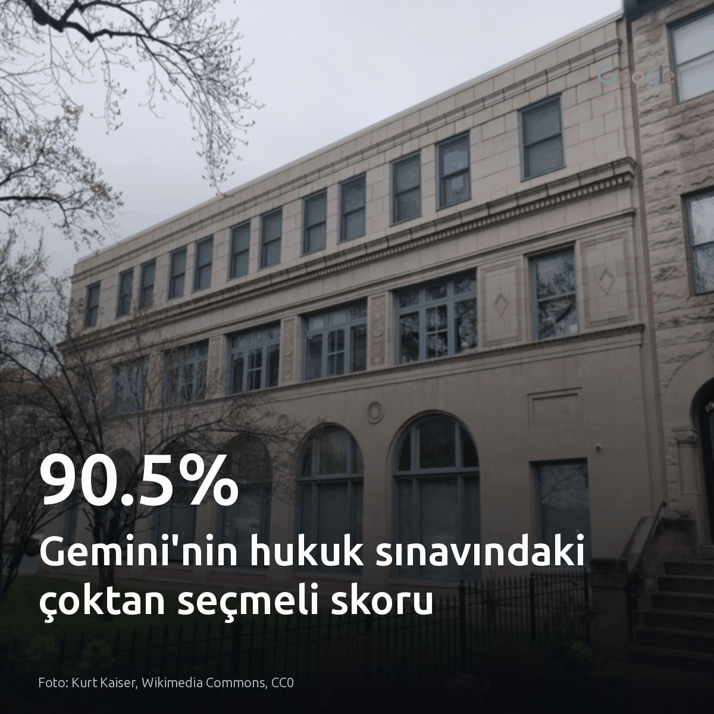
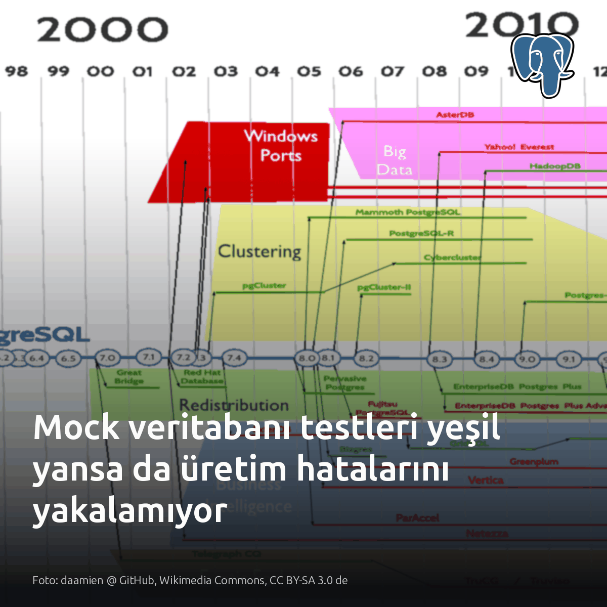
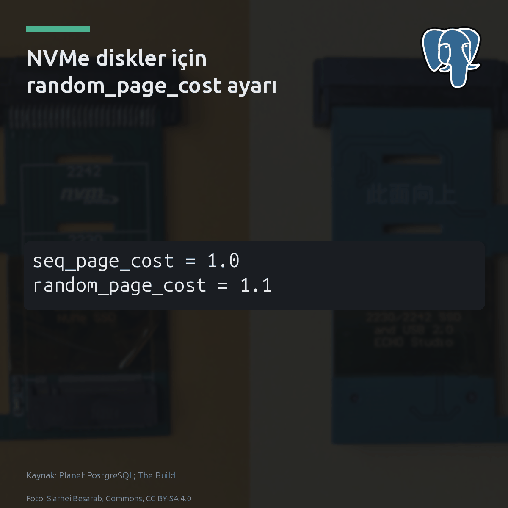
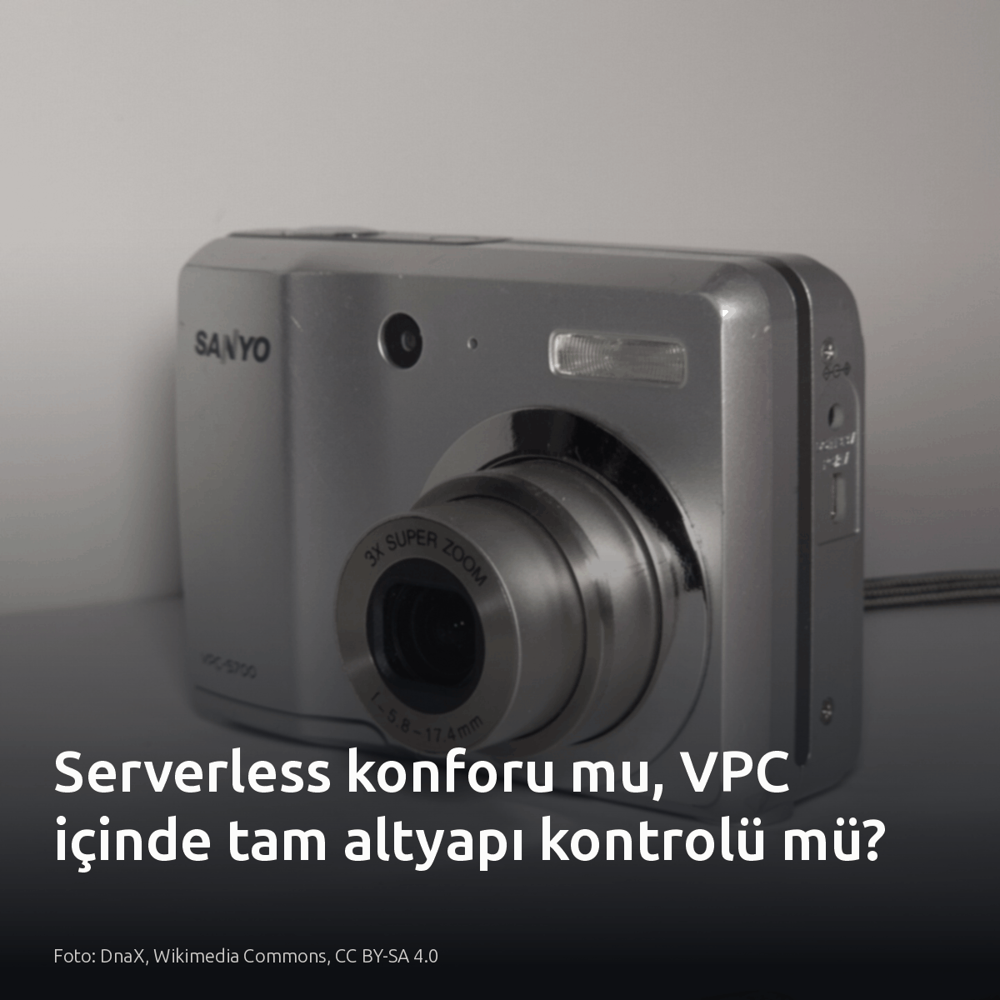
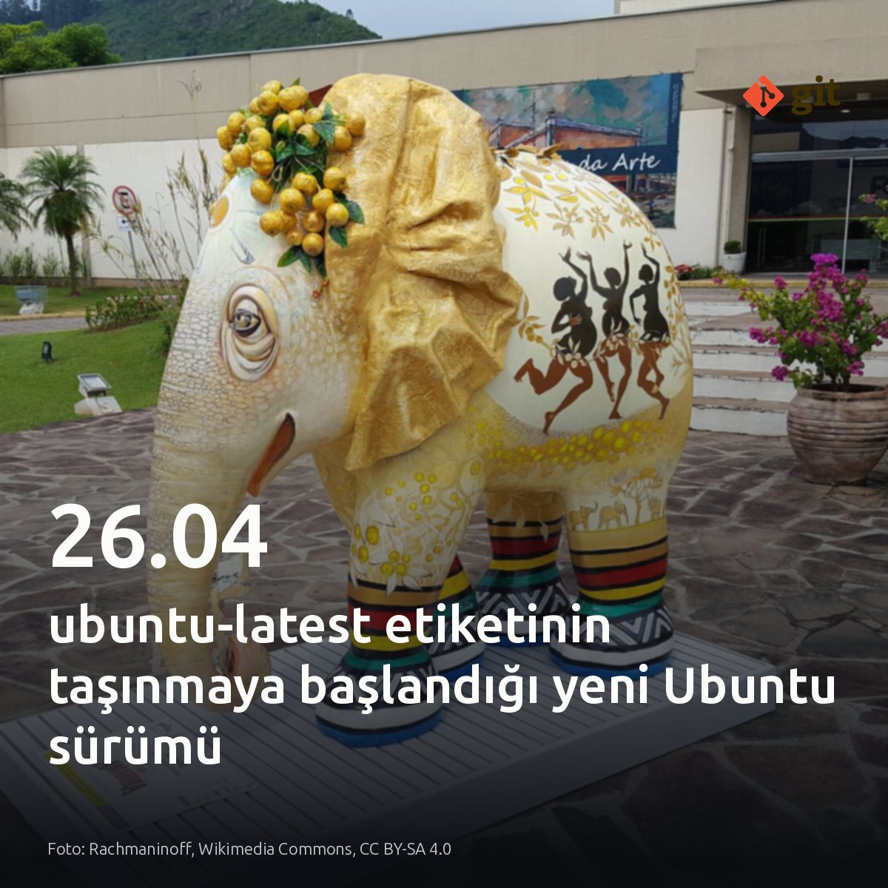

Metni kopyala, kartı indir, LinkedIn'de yapıştır. Bağlantılar gönderiye değil ilk yoruma.

Gemini, Kolombiya hukuk sınavındaki çoktan seçmeli soruların %90,5'ini doğru yanıtladı. Fakat yanıtlara yazılı gerekçe istendiğinde, en başarılı modelin olgusal doğruluk skoru 1 üzerinden yalnızca 0,451'de kaldı. Argümantasyon adımı hızla çuvalladı. Çoktan seçmeli test başarısı mantıksal doğrulama güvencesi sunmuyor. #yapayzeka #llm #benchmarkKartı indir
İnceleme ve kart kaynağı: Görsel kart ve araştırma verileri [S1-S6]: https://medium.com/@ikatoch72/gemini-scored-90-5-on-a-law-exam-then-it-had-to-explain-0a7437dd7c5d?source=rss------large_language_models-5

Mock veritabanı testi boş hesaptan 15 dolar çekilmesini onaylayıp bakiyeyi eksi 500 cent döndürdü. Aynı işlem gerçek bir PostgreSQL motorunda 23514 check_violation hatasıyla reddedildi. Mock nesnesi kısıtları bilmez. Oysa şeması ve göçleri baştan hazırlanmış tek bir PostgreSQL konteyneriyle tüm test süitini yaklaşık 1 saniyede uçtan uca koşmak mümkün. Testlerde veritabanını taklit etmek hız kazandırmaz; kısıt ve tip hatalarını sadece canlı ortama öteler. #postgresql #database #devopsKartı indir
Kaynaklar ve detaylar: - Görsel kaynağı: daamien @ GitHub, Wikimedia Commons, CC BY-SA 3.0 de - [S1], [S2], [S3], [S4], [S5]: https://martin128.medium.com/your-mocked-database-tests-are-lying-test-against-real-postgres-326b3a246d8e?source=rss------postgresql-5

PostgreSQL, NVMe depolamada bile varsayılan 4.0 random_page_cost çarpanı yüzünden planlayıcıyı yanıltıyor. Tom Lane, sürüm 7.0 ile bu değeri getirdiğinde dönen disklerde rastgele bir okuma kırk sıralı okumaya bedeldi. Mekanizma alttaki donanımı algılamaz; planlayıcı, index ile heap sırası arasındaki korelasyon koptukça maliyeti doğrudan bu katsayıyla çarpar. Nitekim korelasyonsuz bir taramada 8.118 heap sayfası 4.0 ile çarpılınca 32.709 birimlik toplam maliyetin 32.472'sini tek başına oluşturuyor. Planlayıcı index'i terk ediyor. Katsayıyı 1.1 seviyesine indirmek aynı tarama maliyetini 9.112 değerine düşürerek sorguyu doğru yürütme planında tutuyor. #postgresql #dba #databasetuningKartı indir
Kaynaklar ve detaylı analiz: Görsel: Planet PostgreSQL, The Build Christophe Pettus, All Your GUCs in a Row: random_page_cost and seq_page_cost: https://postgr.es/p/9yN

Bedrock ile JumpStart arasındaki asıl fark API rahatlığı değil, SLA ve altyapı kontrolü. Bedrock tarafında prompt verisi AWS sınırında kalsa ve IAM ile yönetilse de altyapıya müdahale şansı verilmez. Kontrol ayrılmış düğümde başlar. Özel VPC izolasyonu ve garanti işlem performansı arandığında JumpStart, hızlı dağıtımda sunucusuz uç noktalar seçilmeli. Sistemdeki VPC izolasyon sınırına ve gecikme bütçesine bakın. #awsbedrock #sagemaker #devopsKartı indir
Kaynaklar ve referanslar: - Görsel kaynağı: DnaX, Wikimedia Commons, CC BY-SA 4.0 - [S1], [S2], [S3]: https://www.cloudyali.io/blogs/claude-platform-aws-vs-bedrock-finops - [S4], [S5]: https://medium.com/@vkelk/configuring-claude-code-extension-with-aws-bedrock-and-how-you-can-avoid-my-mistakes-090dbed5215b

GitHub, ubuntu-latest etiketini bugün sessizce Ubuntu 26.04 sürümüne geçirmeye başladı. Derleme ortamı habersizce bölündü. Önümüzdeki bir ay boyunca aynı commit bir çalışmada başarılı olurken bir diğerinde kütüphane uyumsuzluğu yüzünden çökebilir. İş akışlarınızdaki runs-on tanımlarına bakın; kayan etiketler derleme hattında anlık kırılmalara yol açar. İmaj sürümünü doğrudan kilitleyen veya kendi özel runner kümesini çalıştıran boru hatlarında bu risk oluşmaz. #githubactions #devops #ubuntuKartı indir
Kaynaklar: - Görsel ve [S1]: https://aws.plainenglish.io/i-dont-allow-latest-in-my-dockerfiles-my-ci-has-been-using-it-for-years-7f5bae3afe8c?source=rss------devops-5 - [S2], [S3]: https://ubuntu.com/blog/canonical-releases-ubuntu-26-04-lts-resolute-raccoon - [S4], [S5]: https://ubuntu.com/blog/upgrade-your-desktop-ubuntu-26-04-lts